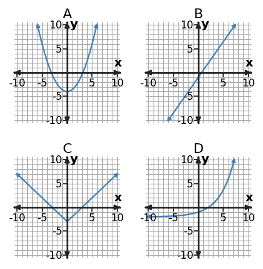

Function Families
How it changes tells you what it is.
Learning Target
Notice how common function families change in different ways.
- Recognize a linear pattern from constant rate.
- Notice basic quadratic, exponential, and absolute-value shapes or patterns.
- Use a table, graph, equation, or context as evidence.
- Explain why one family is more likely than another.
Recognize a linear pattern from constant rate.
A linear relationship changes by a constant rate. In a table with equal input steps, equal output changes are the fastest signal to check.
Rate of change = change in output ÷ change in input. If that rate stays the same across intervals, the pattern is linear.
Example
Determine whether the table shows a linear pattern. Show the rate.
| x | y |
|---|---|
| 0 | -1 |
| 2 | 5 |
| 4 | 11 |
| 6 | 17 |
You Try It
Does this table show a linear pattern? Use first differences as evidence.
| x | y |
|---|---|
| 1 | 2 |
| 2 | 5 |
| 3 | 10 |
| 4 | 17 |
Notice basic quadratic, exponential, and absolute-value shapes or patterns.
Different function families have different change patterns. Linear functions have constant first differences. Quadratic functions have changing first differences but constant second differences when inputs are equally spaced. Exponential functions use a constant multiplier. Absolute-value functions often form a V-shape and show equal-distance symmetry.

Do not classify only by where a graph sits. Look at how it changes: straight rate, curved parabola, multiplicative growth/decay, or V-shaped distance pattern.
Example
Match each value pattern to a family: linear, quadratic, exponential, or absolute value.
| x | Pattern A | Pattern B | Pattern C | Pattern D |
|---|---|---|---|---|
| -2 | -3 | 4 | 1/4 | 2 |
| -1 | -1 | 1 | 1/2 | 1 |
| 0 | 1 | 0 | 1 | 0 |
| 1 | 3 | 1 | 2 | 1 |
| 2 | 5 | 4 | 4 | 2 |
You Try It
Classify each rule by its most likely family: \(y=5x-2\), \(y=(x-1)^2\), \(y=3^x\), \(y=|x+2|\).
Use a table, graph, equation, or context as evidence.
A family claim needs evidence from the representation you are given. In a table, cite differences or ratios. In a graph, cite shape or rate. In an equation, cite structure. In a context, cite how the quantity changes.
“It looks exponential” is weak. “Each output is multiplied by 2 when x increases by 1” is mathematical evidence.
Example
A student calls this pattern exponential. Give table evidence that supports or rejects the claim.
| x | y |
|---|---|
| 0 | 6 |
| 1 | 12 |
| 2 | 24 |
| 3 | 48 |
You Try It
A candle is 24 cm tall and becomes 1.5 cm shorter each hour while it burns. Which family is most likely for height versus time? Use the context as evidence.
Explain why one family is more likely than another.
Sometimes more than one family may seem plausible at first. Compare the defining features and explain which family fits the evidence better.
A strong explanation states what the data do, what one family would require, and why the better family matches that requirement.
Example
A student says this table is quadratic because the outputs get larger quickly. Explain why exponential is more likely.
| x | y |
|---|---|
| 0 | 2 |
| 1 | 6 |
| 2 | 18 |
| 3 | 54 |
You Try It
Quadratic or absolute value? Use the table to decide which family is more likely and explain.
| x | y |
|---|---|
| -2 | 1 |
| -1 | 0 |
| 0 | 1 |
| 1 | 4 |
| 2 | 9 |
Section Summary
- Recognize a linear pattern from constant rate.
- Notice basic quadratic, exponential, and absolute-value shapes or patterns.
- Use a table, graph, equation, or context as evidence.
- Explain why one family is more likely than another.